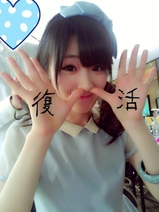

2013/0323Sat（´-`）.｡oO(か ずみん×感謝!!!
みなさんからの温かいメッセージ、
励ましの言葉、凄く嬉しかったです！
パワーになりました！
ありがとうございました。
沢山の方々に助けてもらったおかげで、
体調はずいぶんと良くなりました(T_T)
薬の副作用もあって、
ずーっと寝てたら回復したようです。
良かった( ∩ˇωˇ∩)
ご心配おかけしました。
歌えるまであとちょっとかな〜(´･ｪ･｀)
喋れるようにはなったよ。
着々とお仕事も再開しました！
あと残りは薬が効くのを待ちます...！
今日のガールズアワードは
残念ながら出れなかったのですが、
来週からライブは出ますよ！
毎日お仕事＆やること沢山っ！
頑張るぞ！！
しばらく地声は本当お預けにします。笑
ミュージックフェアのトークの時は
三浦祐太朗さんに百恵ちゃんのお話を
させていただいたので
声を低くしようと気をつけました。笑
あ、でもでも
ダウンタウンDXの時、
空き時間にソフィアの松岡さんが
裏声での喋り方は
喉に負担がかからなくて凄くいいと
言って下さったので、
嬉しかったです(^.^)
裏声にもファルセットとか
色々あって、ちょっと可愛く
出したい時とか、声をはりたい時とか...
まあ長いのでいつか機会があれば♪
----------
あと相方の陽菜ちゃんbirthdayだった♡
今日パーティやったみたいだけど
高山はいれなくて残念...
陽菜ちゃんってさ〜
なんか大人っぽいからかな、
早生まれじゃないっぽいよね！笑
陽菜ちゃんの生誕祭収録
めっちゃ面白かったよ( *´艸｀)
最近の乃木どこで一番笑った！！
さすが陽菜ちゃん！
恐ろしい15歳です( *´艸｀)
相方これからもよろしくね〜♪
-------
明日は初かな、
ソログラビア(*ﾟﾛﾟ)!!
やったー＼(^o^)／
やったー＼(^o^)／♪
楽しみです( *´艸｀)
でも張り切りすぎて
またぶり返さないようにしなくては！
それでは、この辺で...
本当に皆さん、
ご心配おかけしました。
ありがとうございました！
これからもよろしくね(T_T)

↑↓やんちゃ高山とキリッと高山
皆さんどっちが好き...？
それでは、お休みなさい...☆
2013/03/23 23:06
コメント(882)
kazumiさーんこの間のブログコメント出来なかった(>_<)
一実さんはやっぱり笑顔が似合う！と思う！
場合によっては笑うって泣くより何倍も勇気がいると思う。
どんな時でも笑える勇気、持ってほしいな！
一実さんなら出来る！と思うよ(^^♪笑
おやすみ
一実さんはやっぱり笑顔が似合う！と思う！
場合によっては笑うって泣くより何倍も勇気がいると思う。
どんな時でも笑える勇気、持ってほしいな！
一実さんなら出来る！と思うよ(^^♪笑
おやすみ
かずみん、元気そうでよかったー( ☆∀☆)
無理しないで、がんばってねー(*^^*)
無理しないで、がんばってねー(*^^*)
かづみん
ふっかつおめでとーー！！！
心から祝福（≧∇≦）
ふっかつおめでとーー！！！
心から祝福（≧∇≦）
復活おめでとう！！！
なんか違和感があるけどまっいいか（笑）
山口百恵さんの話してる時めっちゃ幸せそうだったね
キリッと高山の方がいいかもー
なんか違和感があるけどまっいいか（笑）
山口百恵さんの話してる時めっちゃ幸せそうだったね
キリッと高山の方がいいかもー
高山元気そうで(((o(*ﾟ▽ﾟ*)o)))
高山に元気もらってるのでこれからは俺から高山に元気をあたえれるように握手会いきます！
楽しみに（笑）俺が楽しみなだけでして＼(^o^)／
ポジティブセイ！
Yeah!
今晩わ！
かずみん復活すごく嬉しいです(^o^)
お祈りしたかいがありましたわ(笑)
また、頑張ってください！(^_^)
かずみん復活すごく嬉しいです(^o^)
お祈りしたかいがありましたわ(笑)
また、頑張ってください！(^_^)
どっちもいいです！
でも自分はキリッとした方が好きです!(^^)!
体調管理に気お付けてこれからも
お仕事頑張って下さい(*^o^*)
でも自分はキリッとした方が好きです!(^^)!
体調管理に気お付けてこれからも
お仕事頑張って下さい(*^o^*)
復活おめでとー(^O^)
今日から、
２回に分けて、コメントすることにしたので、
伝えたいことは、
２回目のコメントに書くので、
ぜひ読んでください（*^_^*）
今日から、
２回に分けて、コメントすることにしたので、
伝えたいことは、
２回目のコメントに書くので、
ぜひ読んでください（*^_^*）
キリッと高山♪( ´▽｀)
やんちゃなかずみん
かわいすぎるやろテンション上がるわ
かわいすぎるやろテンション上がるわ
おーよくなってよかった でもまだ無理しちゃだめたよ
でもまだ無理しちゃだめたよ かずみんの相方のはるなちゃんと俺同い年で学年も一緒なんだけどとても同い年にみえないよねもうまじ大人ってかんじ俺はどのかずみんもすきやよ
かずみんの相方のはるなちゃんと俺同い年で学年も一緒なんだけどとても同い年にみえないよねもうまじ大人ってかんじ俺はどのかずみんもすきやよ
喉早く治ると良いですね（ ; ; ）
僕はキリッと高山が好きですね=(^.^)=
僕はキリッと高山が好きですね=(^.^)=
復活してくれてよかったー！
でも
まだ無理しないでゆっくり休んでね
おだいじに
おやすみ！！！
よかったー(*ゝ｀ω・)
復帰待ってるよ!!
復帰待ってるよ!!
かずみんヤッホー(o・・o)/
良かった良かった
早く歌えるようになるといいなあ
ソログラビア!?
まじかー
ちょっと見たい←
んー
やんちゃ、キリッと、、、
やっぱり…まっちゅんしか！←
はい、真面目に答えます
人中消してたやんちゃなかずみんの方が好きです(笑)
明日も１日ガジがんばー！
ほなねﾉｼ
良かった良かった
早く歌えるようになるといいなあ
ソログラビア!?
まじかー
ちょっと見たい←
んー
やんちゃ、キリッと、、、
やっぱり…まっちゅんしか！←
はい、真面目に答えます
人中消してたやんちゃなかずみんの方が好きです(笑)
明日も１日ガジがんばー！
ほなねﾉｼ
ヤッシーです(^-^)v
元気になって良かったよ。
どっちのかずみんも好きだなー。
選べません(笑)
へばっまずな(^-^)/~~
元気になって良かったよ。
どっちのかずみんも好きだなー。
選べません(笑)
へばっまずな(^-^)/~~
かずみん、こんばんわ
 体調は良くなったみたいだね。でも、あまり無理しないように気を付けてね。今日のミュージックフェア見たよ。大好きな百恵さんのことが聞ける人が、しかも息子さんがゲストに来ててよかったなあ。これこそまさにアメージング今月から来月、そしてその先と、握手会とか、プリンシパルとか続くから、体調整えて頑張ってね。僕もしばらく握手会とか行けてなくて、今度３１日に行くんだけど、かずみんに会えるのを楽しみにしてるよ。じゃあ、ゆっくり休んでね。おやすみ
体調は良くなったみたいだね。でも、あまり無理しないように気を付けてね。今日のミュージックフェア見たよ。大好きな百恵さんのことが聞ける人が、しかも息子さんがゲストに来ててよかったなあ。これこそまさにアメージング今月から来月、そしてその先と、握手会とか、プリンシパルとか続くから、体調整えて頑張ってね。僕もしばらく握手会とか行けてなくて、今度３１日に行くんだけど、かずみんに会えるのを楽しみにしてるよ。じゃあ、ゆっくり休んでね。おやすみ


ソログラビアおめでとう♪
お仕事ファイト♪(*´∀｀)
お仕事ファイト♪(*´∀｀)
はやく完全に治るといいですね(>_<)元気なかずみん待ってます！
どっちのかずみんも好きだなぁ～
どっちのかずみんも好きだなぁ～
良くなったみたいで良かった！＼(^o^)／
ミュージックフェアの時は
三浦さんにいつ質問するんだろうと
期待してました。(^ ^)
意外にキリッとしたの好きかも。
ミュージックフェアの時は
三浦さんにいつ質問するんだろうと
期待してました。(^ ^)
意外にキリッとしたの好きかも。
お疲れ様です！
体調回復してきているみたいで、良かったです＾＾
こちらこそありがとう！
ぼくはｷﾘｯとたかやまちゃん！！
笑顔の一実さんも素敵ですが、ぐるカーの個人PVのちょっとムスッとした一実さんが僕は好みです！
真剣な表情格好良くて。
ではまた！
体調回復してきているみたいで、良かったです＾＾
こちらこそありがとう！
ぼくはｷﾘｯとたかやまちゃん！！
笑顔の一実さんも素敵ですが、ぐるカーの個人PVのちょっとムスッとした一実さんが僕は好みです！
真剣な表情格好良くて。
ではまた！
お仕事お疲れ様(o^^o)
体調治ってよかった！！！
ほんと心配だった、、、
早くかずみんの歌声聞けるの楽しみにしとくね♡
ほんとによかった！
明日もお仕事頑張ってね♡
おやすみかずみん♡
かずみんこんばんは♪
お仕事頑張ってほしいけどあまり無理しないでね(=ﾟωﾟ)ﾉ
かずみんの活躍に期待しています！
お仕事頑張ってほしいけどあまり無理しないでね(=ﾟωﾟ)ﾉ
かずみんの活躍に期待しています！
やんちゃ高山が好きー！キリッと高山は別人みたいだな(笑 めっちゃ美人！
お元気になられたようで、安心しました。
かずみさんの揃ったフォーメーションでの
かずみさんの歌声を聴きたいです。
はやく元気になぁれ。
完全復活をまってます。
かしこ。
かずみさんの揃ったフォーメーションでの
かずみさんの歌声を聴きたいです。
はやく元気になぁれ。
完全復活をまってます。
かしこ。
良くなりましたか。
よかった。あ～良かった。
元気になったらやんちゃ高山でいいし。
少し体調悪くしたらキリッと高山もいいんでない？？
病みあがり。バリバリ仕事しないようにな。
smile smile smileでした。
ここ大事よ♪
よかった。あ～良かった。
元気になったらやんちゃ高山でいいし。
少し体調悪くしたらキリッと高山もいいんでない？？
病みあがり。バリバリ仕事しないようにな。
smile smile smileでした。
ここ大事よ♪
かずみんこんにちはー
だいぶ良くなってよかった～
そうだね、治ってきたからってまた無理したら戻っちゃうから完治するまでは油断したらだめだよん。
自分はやんちゃかずみんがいいなぁ
明るい方がかずみんらしい
だいぶ良くなってよかった～
そうだね、治ってきたからってまた無理したら戻っちゃうから完治するまでは油断したらだめだよん。
自分はやんちゃかずみんがいいなぁ
明るい方がかずみんらしい
ポジティーブ＼(^o^)／
かーずみーーーん゜゜(´O｀)°゜
良かった～ほんとに良かった～(>_<)
無理しないでねっ！
かずみんに会いたいなぁ★☆
私はやんちゃ高山もキリッと高山もどっちも大好き(*≧∀≦*) ギャップが良いねっ(^^)v
良かった～ほんとに良かった～(>_<)
無理しないでねっ！
かずみんに会いたいなぁ★☆
私はやんちゃ高山もキリッと高山もどっちも大好き(*≧∀≦*) ギャップが良いねっ(^^)v
かずみん久しぶりだね♪
具合がよくなってきて安心したよ(^-^)
あんまり無理はしないでね‼
また元気なかずみん待ってまーす＼(^o^)／
具合がよくなってきて安心したよ(^-^)
あんまり無理はしないでね‼
また元気なかずみん待ってまーす＼(^o^)／
かずみん！おかえりー(^O^)
次の全握は参加するかね！
次の全握は参加するかね！
先日の全握いったんだけどさ、高山アメージングなしはなんか物足りなかったよ…
かずみんは乃木坂に不可欠の人なんだね！！
ちなみにキリ山派です 笑
かずみんは乃木坂に不可欠の人なんだね！！
ちなみにキリ山派です 笑
もう無理したらアカンよ!!
ゆっくり焦らず自分のペースで、頑張りや
ポジティブ セイ!!
＼(*^^*)／
ゆっくり焦らず自分のペースで、頑張りや
ポジティブ セイ!!
＼(*^^*)／
だっさんです(^-^)/
よくなったの!?
無理せずにね(*^^*)
どっちが好きって
選べないでしょ(*_*)
またね♪
俺のベホマが1番効いた。はず。
そしてキリッとしてる方が俺はすきやな。
まぁどっちもええけど。
ふぁいっ！
どっちも好きねん！治ってよかった！
復活！！良かった！心配した！
やんちゃもキリッともどっちも美しい(*´-`)
裏声と言えば、あの
キング・オブ・ポップ！
マイケル・ジャクソンも普段しゃべる声は裏声でしゃべるようにしてるんだよね♪
ちょっとした豆知識的なやつ(笑)
とにかくよかったよ良くなって ！
歌えるまであと少し頑張ってね！
やんちゃもキリッともどっちも美しい(*´-`)
裏声と言えば、あの
キング・オブ・ポップ！
マイケル・ジャクソンも普段しゃべる声は裏声でしゃべるようにしてるんだよね♪
ちょっとした豆知識的なやつ(笑)
とにかくよかったよ良くなって ！
歌えるまであと少し頑張ってね！
かずみーーん！！大丈夫ですかー！！(*^◯^*)
でも、大分よくなったみたいで安心した〜(o^^o)
まだ、100パーセントは治ってないみたいだから、まだ無理せず仕事して下さいね！！
でも、本当に良かったー！！
かずみんがいて、乃木坂って感じだからね！！
（≧∇≦）
ちなみに、僕はやんちゃ高山の方がいいけど、たまにキリッと高山もみてみたいって感じです！！
では、ゆっくり休んで明日もポジティブ頑張りましょうね！！
でも、大分よくなったみたいで安心した〜(o^^o)
まだ、100パーセントは治ってないみたいだから、まだ無理せず仕事して下さいね！！
でも、本当に良かったー！！
かずみんがいて、乃木坂って感じだからね！！
（≧∇≦）
ちなみに、僕はやんちゃ高山の方がいいけど、たまにキリッと高山もみてみたいって感じです！！
では、ゆっくり休んで明日もポジティブ頑張りましょうね！！
全国握手会で見れなかったのは、
残念だったけど、いつも通りの
かずみんで元気で良かった(・ω・)ノ
ダウンタウンさんに気に入られたっぽいね 笑
バラエティでも頑張ってね(((o(*ﾟ▽ﾟ*)o)))
残念だったけど、いつも通りの
かずみんで元気で良かった(・ω・)ノ
ダウンタウンさんに気に入られたっぽいね 笑
バラエティでも頑張ってね(((o(*ﾟ▽ﾟ*)o)))
ベーちゃんです!!
かずみん復活おめでとうー(((o(*ﾟ▽ﾟ*)o)))
これからは気管支炎にならないように気をつけてね
あと無理は禁物ですね
全握のときはかずみんいなくて残念だったけど元気でよかった(*^^*)
ということは今度のライブ行くしかないね笑
でも川後ちゃんの誕生日を祝えなかったのは残念ですね(T ^ T)
あとかずみんはやんちゃでもキリ顏でもかわいいです(^^)
まあーやんちゃ顏のほうが好みかも…笑
ってことでまたー
アメイジング*\(^o^)/*
かずみん復活おめでとうー(((o(*ﾟ▽ﾟ*)o)))
これからは気管支炎にならないように気をつけてね
あと無理は禁物ですね
全握のときはかずみんいなくて残念だったけど元気でよかった(*^^*)
ということは今度のライブ行くしかないね笑
でも川後ちゃんの誕生日を祝えなかったのは残念ですね(T ^ T)
あとかずみんはやんちゃでもキリ顏でもかわいいです(^^)
まあーやんちゃ顏のほうが好みかも…笑
ってことでまたー
アメイジング*\(^o^)/*
初コメです！
体調よくなりましたか？休むのも仕事ですよ！！
元気になったかずみんを見れるのを楽しみにしています。
かずみんならどっちもかわいいけど、どっちって言われたら、やんちゃなかずみんが好きです！
おおかずみんよ！！だいぶ治ってきたみたいだね。よかったよかった♪
ひなぴょんの相方うらやまー。いーーっつも飴と鞭コンビはラブラブしてっからなぁ…。
かずみん代わってくれよ(°_°)
ソログラビアおめ！！
出たらチェックするぜ！
おれはやんちゃかずみんのが好きだぜ！
ばいっ(#^.^#)
みたよー
何回もりぴった
何回もりぴった
早く体調治して頑張って。
ども～(*^o^*)
かずみん!!
元気になって良かったぁ(*^^)v
じゃあ今度の
金沢ガールズフェスティバル☆
来れるよね?!
俺は握手会とか中学生だし
遠くて行けないから…
めちゃくちゃ楽しみにしてます!(^^)!
最前列で友達と待ってま～す(≧▽≦)
やっぱりかずみんは
やんちゃな（明るい）方が
好きだなぁ～(笑)
でもキリッとしたのも
カッコイイｨｨヾ(≧∇≦)
どっちも好きだな～(●´∀｀●)
かずみん!!
元気になって良かったぁ(*^^)v
じゃあ今度の
金沢ガールズフェスティバル☆
来れるよね?!
俺は握手会とか中学生だし
遠くて行けないから…
めちゃくちゃ楽しみにしてます!(^^)!
最前列で友達と待ってま～す(≧▽≦)
やっぱりかずみんは
やんちゃな（明るい）方が
好きだなぁ～(笑)
でもキリッとしたのも
カッコイイｨｨヾ(≧∇≦)
どっちも好きだな～(●´∀｀●)
治って良かったですね！
めっちゃ心配してました(>_<)
グラビア楽しみです(*^^*)
発売されたら買いますね！
両方好きだけどやんちゃの
かずみんがいいですね(^-^)/
自分からも質問です！
自分の学年で乃木坂
ファンが一人もいません(>_<)
どうすればいいですか？
よかったら教えてください！
ではお休みなさい☆
かずみんやったね！＼(^-^)／
全部のかずみん好きだよ！
かなちゃんも好きだよ！
DD ですから！( ☆∀☆)
かずみんファイト＼(^o^)／
全部のかずみん好きだよ！
かなちゃんも好きだよ！
DD ですから！( ☆∀☆)
かずみんファイト＼(^o^)／


めっちゃ楽しみにしてます＼(^o^)／